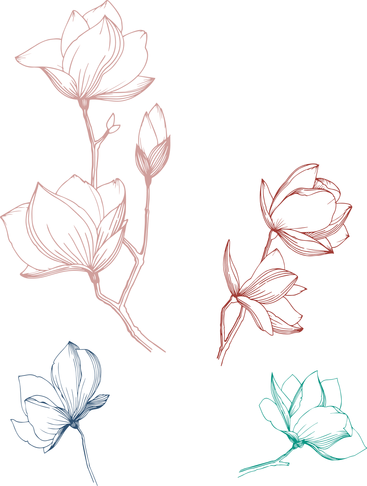

Persephone
Περσεφόνη
Vegetation godess. Queen of the Underworld. Obviously Capricorn. Daughter of Demeter, a Virgo. Couldn't live up to her mother's high standards. The embodiment of imposter syndrome. Easily bored and curious. Pomegranate. Immortality. Her name means "she who destroys the light".
